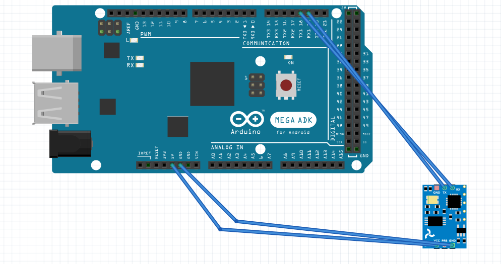

Interface from ISensor.
Every GPS code is available in GPS/ folder.
In order to have compatibility with a lot of sensors and efficiency we use the TinyGPS library.
The GPS does not need a lot of configuration. Just plug the GPS with the following:

The way of handling the GPS is more described here.
for configuration, you have few settings in the file config.hpp such as choosing the SERIAL port and BAUDRATE.
The code of the GPS sensor heavily depends on TinyGPS library. However, in order to integrate the lirary in our firmware we use a class GPS available at: GPS/GPS.h.
We use the NEO 6M gps module. However all the GPS that use the NMEA 0183 protocol should work. Here is a list of GPS modules you could use:
A lot more..